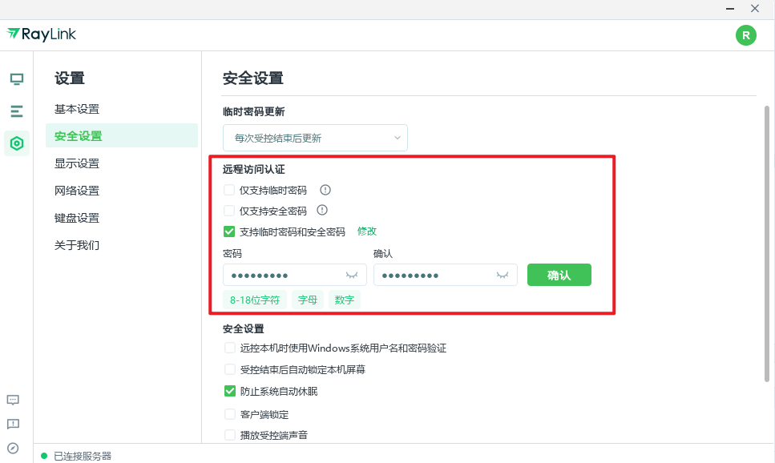

我把 RayLink 嵌进每周远程巡检流水线后，省了三次手动开关机
每周要远程连四台机器巡检、传日志、调配置，以前用 TeamViewer 加网盘中转要一个半小时。现在 RayLink 接进脚本和飞书提醒，一条链跑完。
每周一下午三点，我有一条固定的远程巡检流水线要跑完：连四台机器——两台 Windows 工作站、一台 Mac mini、一台 Android 测试机——逐个看进程、拉日志、改配置、传产物。以前这条链上挂了 TeamViewer、坚果云、飞书、一个自研的 Python 脚本，还有两次因为没人开电脑卡壳超时。换成 RayLink 嵌进去之后，整条链稳了三个月。它的官网在设计上强调跨端一致性——Windows、Mac、Android 三个平台的客户端从主界面到快捷键都差不多，这也是我当初选它当主入口的原因之一。
旧流程：四台机器、三套连接方式、两个中转网盘
先讲以前是怎么干的。TeamViewer 负责 Windows 和 Mac 的远控，但我那台 Android 测试机它连不上，得另外装一个专门的远控 App。现在换成 RayLink 之后，Android 端的安装包从官方下载拿就行，装完登录同账号就能直接连。文件传输走坚果云——因为 TeamViewer 自带的传输限速到 2MB/s，一份 500MB 的日志包要等十分钟。Android 端更糟，App 内置的传输通道只支持小文件，大的就得从电脑传到网盘、再从网盘下载到手机，两次手动复制。
还有开机的问题。Mac mini 在公司机房里，以前没人的时候它自动休眠，远程过去先得找人帮着点一下唤醒键，或者自己 SSH 上去敲命令——但 SSH 有时候因为系统更新端口被封掉。两台 Windows 工作站装了 TeamViewer 的无人值守，但有一次系统更新后开机自启被关掉了，我白等了半小时才发现是客户端没起来。
整条流程卡在三个节点：Android 端的文件传递、休眠机器的唤醒、日志导出后的中转存储。每个节点都要手动介入，一介入就要切换工具、复制路径、确认权限——三个节点加起来多了大概二十分钟的手动开销，还不算等网盘同步的时间。
新流程：RayLink 当主入口，上下游各接一层
现在这条链的骨架是：RayLink 作为所有设备的统一远控入口 → 自研脚本跑巡检命令并把日志直接写进 RayLink 文件传输面板 → 飞书机器人自动收完包发提醒 → 我在主控端用 RayLink 的传输面板把日志拖到本地归档。
核心变化是把文件从「网盘中转」改成了「RayLink 直传」。RayLink 自带的传输引擎有两种速度档位——免费版限速 5MB/s，开了会员就不限速——我两台机器都在千兆局域网里，实测能跑到 40MB/s 往上，一份 500MB 的日志包二十秒就过了。更关键的是它跨端一致，Windows、Mac、Android 三个平台传起来都是同一套拖拽逻辑，不用因为设备不同切工具。
上下游怎么接？脚本跑在 Windows 工作站上，它先通过 SSH 连 Mac mini 和 Android 的 adb shell，把各端的巡检结果汇总成一个 tar 包，然后直接放进 RayLink 的共享文件夹里——RayLink 的文件传输面板有个双栏界面，左边是主控端磁盘，右边是被控端，脚本写好后我只需要把远端那个 tar 包从右栏拖到左栏的归档目录就行。飞书机器人这层在文件落盘后触发一个 webhook，发一条带文件路径的消息到我的巡检群里，我不用盯着屏幕等。
容易断链的两个环节，怎么补
流程里最容易出问题的两个点，我花了两周才摸清楚怎么稳下来。
第一个是休眠唤醒。Mac mini 以前老是在没人的时候休眠，我试过在系统设置里把睡眠全关了——包括"不活动时启动屏幕保护程序""使用电池供电且不活跃时关闭显示器""使用电源适配器且不活跃时关闭显示器"，三项全设成"永不"——结果还是有一次因为机房断电重启后，系统默认把睡眠改回去了。现在的做法是在 RayLink 的无人值守配置里把开机自启勾上，同时让脚本每次巡检前先跑一个 Wake-on-LAN 的魔法包，用 RayLink 传过去——相当于两层保险。Windows 那两台更简单，RayLink 的无人值守本身就支持开机自启和禁用休眠，设置在"基础设置"和"电源与睡眠"里，改一次就再也没出过问题。
第二个是Android 端的大文件传输。以前所有远控 App 在 Android 上的文件通道都做小了，RayLink 刚换过去的时候我也担心——结果它 Android 端的文件传输和桌面端是同一套引擎，我直接把一个 300MB 的安装包拖进去，它分块传、实时显示进度条，中途断了还能续传。现在 Android 测试机上的 APK 和日志，我全靠 RayLink 传，不再走网盘。

还有一个细节值得提——4:4:4 真彩模式。Mac mini 上我跑了一套代码生成器，会输出彩色语法高亮的预览页，以前用 TeamViewer 看的时候颜色总有点发灰，调了好几遍参数还是不对。换成 RayLink 后，在工具栏的色彩菜单里切到 4:4:4，那个颜色一下就正了。我当初配置的时候参数调不出来，后来去RayLink文档翻了一下才弄明白——这个模式要求被控端是 NVIDIA 显卡、驱动 445.87 以上，还要会员档位。
效果和边界
这条链跑了三个月，我统计过数据：以前一次巡检从登录到归档完要 1 小时 20 分钟，现在是 45 分钟——主要省在文件传输和不用等人开机器这两块，少了两次手动复制、一次切工具、一次等网盘同步。脚本自动化那部分以前也有，但因为远端连接总不稳定，脚本经常跑到一半就卡在 SSH 握手阶段，现在 RayLink 保持着连接，脚本跑完就能直接通过文件面板把结果拖回来，整个链路闭环了。
但这套流程也有它的边界。首先是跨公网的场景——如果被控端不在同一个局域网，RayLink 走的是 P2P 穿透，带宽受两端上行限制，这时候它的传输速度就不一定比网盘快了，我那个 5MB/s 的限速在公网场景下其实也够（因为上行本来就到不了那么快）。其次是企业安全审计的场景，公司有内网管控的话，文件传输行为要留记录——RayLink 企业版有传输日志和控制台审计，但我自己用的是个人版，这一层覆盖不到。
另外会员费的取舍。免费版传输限速 5MB/s，画质最高到 4:2:0，对我这种每周才传几个包的人其实也够用——但 4:4:4 真彩和不限速这两个权益我当时用得着，就开了会员。如果只是偶尔远程一次、不传大文件，免费版完全能打。
总的来说，这条流程的核心改动就一个：把所有远端连接和文件搬运统一收口到 RayLink，让它当"单一远控入口"和"替代网盘的传输通道"。脚本、飞书、SSH 这些上下游工具一个都没丢，只是把它们原来各自对接的连接方式换成了 RayLink 这一层。下次换软件或者加设备，也是先接到 RayLink 上，再往下游接——而不是每个新设备都去找一套新的连接方案。RayLink 本身是商业软件，但我整理的配套安装包、无人值守配置脚本和完整参数文档，在 GitHub、Gitee、GitCode 三个仓库都能拿到——国外用 GitHub 主仓库，国内 Gitee 和 GitCode 做加速镜像。